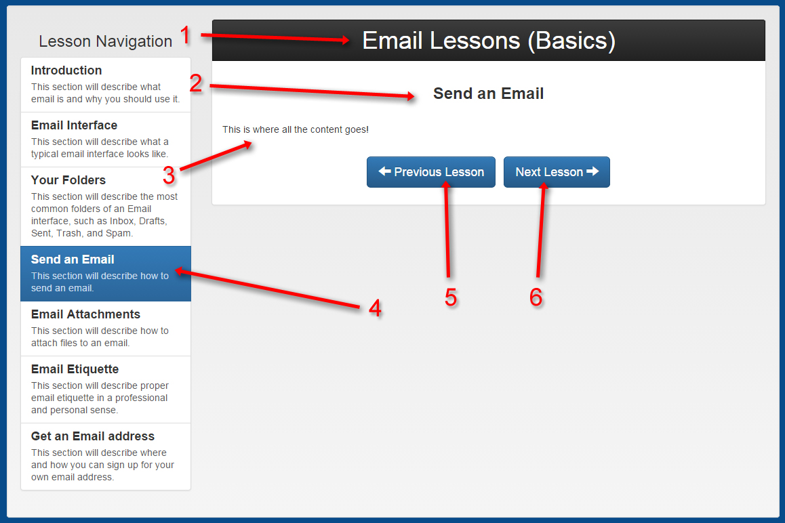

Lesson Navigation
Start Here!
Welcome to Simply Social, where we make social media easy.
On this page, we will tell you what social media is, and guide you through selecting an appropriate tutorial!
You hear about it all the time, but what does the term "Social Media" really mean? The Merriam-Webster online dictionary defines it as "forms of electronic communication (as Web sites for social networking and microblogging) through which users create online communities to share information, ideas, personal messages, and other content (as videos)"
Basically, social media is a way of sharing with your family and friends over the internet. This makes it easy for everyone to be up to date on each other's lives, and to communicate in real time with great convenience. Facebook is the most common example of social media, averaging about 1.23 Billion active, monthly users. This high usage makes it easy to find people you know on the website. Each user creates an account with their name and other information so that they can be identified by friends and family attempting to connect with them. Messages, pictures and videos can be posted for all to see or passed privately between individuals or groups. Facebook has a live chat feature, making it easy to communicate with a person in real time.
Even more commonly used than social media (or social networks) is Electronic Mail, or Email. Email is used today more than letters to send personalized communication, with a majority of young adults and adults using it to communicate for business, school, and personal correspondence.
In order to access email and social media, you need to use a special program called a web browser. You're using one right now to read this page! Web browsers come in a variety of styles, but they all serve the same basic functions.
You're probably wondering where to start in the tutorials, as there are an awful lot of pages to choose from. Don't worry! We'll make it easy for you to decide. Before we help you figure out where to start, let's talk about the format of the tutorials first. That way, you can navigate the lessons like a pro.
Each lesson page will be formatted kind of like the one you are currently in.
If you check out the diagram below, you can see what all of the different parts do.

1. This is the lesson title. It tells you what lesson set you are in.
2. This is the lesson sub-title. It tells you what lesson page you are on within the lesson set..
3. This is the lesson content. This will have all of the learning material, pictures and other information for the lesson.
4. This is the lesson navigation bar. You can skip around to different parts of the lesson by clicking on the lesson that you would like to go to. There is a lesson subtitle and description in each box. The lesson page you are currently on will be highlighted in blue, like "Send an Email" is in this example.
5. This is the Previous Lesson button. When you are going through a lesson with multiple pages, this button will appear if you have the option to return to the lesson page before the one you are currently on.
6. This is the Next Lesson button. When you want to move on to the next lesson page, you can click this button
Now that you understand how the lessons are formatted, it's time to pick a tutorial. When you're ready to move on to the next lesson page, click "Next Lesson" below.
Helpful Links:


The Simply Social brand is Simply Social Inc. 2014. Simply Social only owns the Simply Social logo, and all other images are copyrighted by their respective owners. The sources for these images, as well as the website icons, can be found in the about page. This website was made for a class project, and is not intended for any kind of commerce or commercial use. Simply Social is not affiliated in any way with any of the other websites mentioned or linked to in this website.